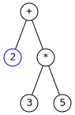
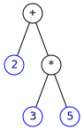
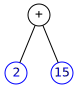
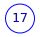

Tipos de datos y operaciones predefinidas
Ricardo Pérez López
IES Doñana, curso 2025/2026
1 Sistemas de tipos
1.1 Concepto
Un tipo (o tipo de datos) es un conjunto de valores y de operaciones que se pueden realizar sobre esos valores.
El sistema de tipos de un lenguaje es el conjunto de reglas que asigna un tipo a cada elemento del programa.
Exceptuando a los lenguajes no tipados (Ensamblador, código máquina, Forth…) todos los lenguajes tienen su propio sistema de tipos, con sus características.
El sistema de tipos de un lenguaje depende también del paradigma de programación que soporte el lenguaje. Por ejemplo, en los lenguajes orientados a objetos, el sistema de tipos se construye a partir de los conceptos propios de la orientación a objetos (clases, interfaces…).
1.2 Errores de tipos
Cuando se intenta realizar una operación sobre un dato cuyo tipo no admite esa operación, se produce un error de tipos.
Ese error puede ocurrir cuando:
Los operandos de un operador no pertenecen al tipo que el operador necesita (ese operador no está definido sobre datos de ese tipo).
Los argumentos de una función o método no son del tipo esperado.
Por ejemplo:
es incorrecto porque el operador
+no está definido sobre un entero y una cadena (no se pueden sumar un número y una cadena).
En caso de que exista un error de tipos, lo que ocurre dependerá de si estamos usando un lenguaje interpretado o compilado:
Si el lenguaje es interpretado (Python):
El error se localizará durante la ejecución del programa y el intérprete mostrará un mensaje de error advirtiendo del mismo en el momento justo en que la ejecución alcance la línea de código errónea, para acto seguido finalizar la ejecución del programa.
Si el lenguaje es compilado (Java):
Es muy probable que el comprobador de tipos del compilador detecte el error de tipos durante la compilación del programa, es decir, antes incluso de ejecutarlo. En tal caso, se abortará la compilación para impedir la generación de código objeto erróneo.
1.3 Tipado fuerte vs. débil
Un lenguaje de programación es fuertemente tipado (o de tipado fuerte) si no se permiten violaciones de los tipos de datos.
Es decir, un valor de un tipo concreto no se puede usar como si fuera de otro tipo distinto a menos que se haga una conversión explícita.
Un lenguaje es débilmente tipado (o de tipado débil) si no es de tipado fuerte.
En los lenguajes de tipado débil se pueden hacer operaciones entre datos cuyo tipos no son los que espera la operación, gracias al mecanismo de conversión implícita.
Existen dos mecanismos de conversión de tipos:
Conversión implícita o coerción: cuando el intérprete convierte un valor de un tipo a otro sin que el programador lo haya solicitado expresamente.
Conversión explícita o casting: cuando el programador solicita expresamente la conversión de un valor de un tipo a otro usando alguna construcción u operación del lenguaje.
Los lenguajes de tipado fuerte no realizan conversiones implícitas de tipos salvo excepciones muy concretas (por ejemplo, conversiones entre enteros y reales en expresiones aritméticas).
Los lenguajes de tipado débil se caracterizan, precisamente, por realizar conversiones implícitas cuando, en una expresión, el tipo de un valor no se corresponde con el tipo necesario.
Ejemplo:
Python es un lenguaje fuertemente tipado, por lo que no podemos hacer lo siguiente (da un error de tipos):
En cambio, PHP es un lenguaje débilmente tipado y la expresión anterior en PHP es perfectamente válida (y vale cinco).
El motivo es que el sistema de tipos de PHP convierte implícitamente la cadena
"3"en el entero3cuando se usa en una operación de suma (+).
Es importante entender que la conversión de tipos no modifica el dato original, sino que devuelve un nuevo dato a partir del dato original pero con el tipo cambiado.
1.4
type
La función
typedevuelve el tipo de un valor:Es muy útil para saber el tipo de una expresión compleja:
1.5 Tipos de datos básicos
- Los tipos de datos básicos que empezaremos a estudiar en Python son:
\text{Tipos básicos}\begin{cases} \text{Números}\begin{cases} \text{Enteros} \\ \text{Reales} \end{cases} \\ \text{Cadenas} \\ \text{Funciones} \\ \text{Lógicos (o \textit{booleanos})} \end{cases}
1.5.1 Números
Hay dos tipos numéricos básicos en Python: los enteros y los reales.
Los enteros se representan con el tipo
int.Sólo contienen parte entera, y sus literales se escriben con dígitos sin punto decimal (ej:
13).Los reales se representan con el tipo
float.Contienen parte entera y parte fraccionaria, y sus literales se escriben con dígitos y con punto decimal separando ambas partes (ej:
4.87). Los números en notación exponencial (2e3) también son reales (2e3 = 2.0\times10^3).
Las operaciones que se pueden realizar con los números son los que cabría esperar (aritméticas, trigonométricas, matemáticas en general).
Los enteros y los reales generalmente se pueden combinar en una misma expresión aritmética y suele resultar en un valor real, ya que se considera que los reales contienen a los enteros.
- Ejemplo:
4 + 3.5devuelve7.5.
- Ejemplo:
Por ello, y aunque el lenguaje sea de tipado fuerte, se permite la conversión implícita entre datos de tipo
intyfloatdentro de una misma expresión para realizar las operaciones correspondientes.En el ejemplo anterior, el valor entero
4se convierte implícitamente en el real4.0debido a que el otro operando de la suma es un valor real (3.5). Finalmente, se obtiene un valor real (7.5).
1.5.2 Cadenas
Las cadenas son secuencias de cero o más caracteres codificados en Unicode.
En Python se representan con el tipo
str.- No existe el tipo carácter en Python. Un carácter en Python es simplemente una cadena que contiene un solo carácter.
Un literal de tipo cadena se escribe encerrando sus caracteres entre comillas simples (
') o dobles (").- No hay ninguna diferencia entre usar unas comillas u otras, pero si una cadena comienza con comillas simples, debe acabar también con comillas simples (y viceversa).
Ejemplos:
"hola"'Manolo'"27"
También se pueden escribir literales de tipo cadena encerrándolos entre triples comillas (
'''o""").Estos literales se usan para escribir cadenas formadas por varias líneas. La sintaxis de las triples comillas respeta los saltos de línea. Por ejemplo:
No es lo mismo
27que"27".27es un número entero (un literal de tipoint)."27"es una cadena (un literal de tipostr).
Una cadena vacía es aquella que no contiene ningún carácter. Se representa con los literales
'',"",''''''o"""""".
Si necesitamos meter el carácter de la comilla simple (
') o doble (") en un literal de tipo cadena, tenemos dos opciones:Delimitar la cadena con el otro tipo de comillas. Por ejemplo:
'Pepe dijo: "Yo no voy.", así que no fuimos.'"Bienvenido, Señor O'Halloran."
«Escapar» la comilla, poniéndole delante una barra inclinada hacia la izquierda (
\):"Pepe dijo: \"Yo no voy.\", así que no fuimos."'Bienvenido, Señor O\'Halloran.'
1.5.3 Tuplas
Las tuplas (datos de tipo
tuple) son una generalización de las cadenas.Una tupla es una secuencia de elementos que no tienen por qué ser caracteres, sino que cada uno de ellos pueden ser de cualquier tipo (números, cadenas, booleanos, …, incluso otras tuplas).
Los literales de tipo tupla se representan enumerando sus elementos separados por comas y encerrados entre paréntesis.
Por ejemplo:
Si sólo tiene un elemento, hay que poner una coma detrás:
Al igual que ocurre con las cadenas, tenemos las operaciones
t[0],t[1:]y+(concatenación).Con la concatenación se pueden crear nuevas tuplas a partir de otras tuplas.
Por ejemplo:
Eso significa que, si
tes una tupla no vacía, se cumple que
t == (t[0],) + t[1:].Esta propiedad es similar (aunque no exactamente igual) a la que se cumple en las cadenas no vacías.
1.5.4 Funciones
En programación funcional, las funciones también son datos:
La única operación que se puede realizar sobre una función es llamarla, que sintácticamente se representa poniendo paréntesis
()justo a continuación de la función.Dentro de los paréntesis se ponen los argumentos que se aplican a la función en esa llamada (si es que los necesita), separados por comas.
Por tanto,
maxes la función en sí (un valor de tipo función) , ymax(3, 4)es una llamada a la funciónmaxcon los argumentos3y4.Recordemos que las funciones no tienen expresión canónica, por lo que el intérprete no intentará nunca visualizar un valor de tipo función.
1.6 Conversión de tipos
Hemos visto que en Python las conversiones de tipos deben ser explícitas, es decir, que debemos indicar en todo momento qué dato queremos convertir a qué tipo.
Para ello existen funciones cuyo nombre coincide con el tipo al que queremos convertir el dato:
str,intyfloat, entre otras.Convertir un dato a cadena suele funcionar siempre, pero convertir una cadena a otro tipo de dato puede fallar dependiendo del contenido de la cadena:
Recordando lo que dijimos anteriormente, la conversión de tipos no modifica el dato original, sino que devuelve un nuevo dato a partir del dato original pero con el tipo cambiado.
Las funciones de conversión de tipos hacen precisamente eso: devuelven un nuevo dato con un determinado tipo a partir del dato original que reciben como argumento.
Por tanto, la expresión
int('24')devuelve el entero24pero no cambia en modo alguno la cadena'24'que ha recibido como argumento.
2 Operaciones predefinidas
2.1 Operadores predefinidos
2.1.1 Operadores aritméticos
| Operador | Descripción | Ejemplo | Resultado | Comentarios |
|---|---|---|---|---|
+ |
Suma | 3 + 4 |
7 |
|
- |
Resta | 3 - 4 |
-1 |
|
* |
Producto | 3 * 4 |
12 |
|
/ |
División | 3 / 4 |
0.75 |
Devuelve un float |
% |
Módulo | 4 % 38 % 3 |
12 |
Resto de la división |
** |
Exponente | 3 ** 4 |
81 |
Devuelve 3^4 |
// |
División entera hacia abajo | 4 // 3-4 // 3 |
1-2 |
?? |
2.1.2 Operadores de cadenas
| Operador | Descripción | Ejemplo | Resultado |
|---|---|---|---|
+ |
Concatenación | 'ab' + 'cd'
'ab' 'cd' |
'abcd' |
* |
Repetición | 'ab' * 33 * 'ab' |
'ababab''ababab' |
[0] |
Primer carácter | 'hola'[0] |
'h' |
[1:] |
Resto de cadena | 'hola'[1:] |
'ola' |
2.2 Funciones predefinidas
| Función | Descripción | Ejemplo | Resultado |
|---|---|---|---|
abs(n) |
Valor absoluto | abs(-23) |
23 |
len(cad) |
Longitud de la cadena | len('hola') |
4 |
max(n_1(, n_2)^+) |
Valor máximo | max(2, 5, 3) |
5 |
min(n_1(, n_2)^+) |
Valor mínimo | min(2, 5, 3) |
2 |
round(n[, p]) |
Redondeo | round(23.493)round(23.493, 1) |
2323.5 |
type(v) |
Tipo del valor | type(23.5) |
<class'float'> |
2.2.1 Funciones matemáticas y módulos
Python incluye una gran cantidad de funciones matemáticas agrupadas dentro del módulo
math.Los módulos en Python son conjuntos de funciones (y más cosas) que se pueden importar dentro de nuestra sesión o programa.
Son la base de la programación modular, que ya estudiaremos.
Para importar una función de un módulo se puede usar la orden
from. Por ejemplo, para importar la funcióngcddel módulomathse haría:Una vez importada, la función ya se puede usar directamente como cualquier otra.
También se puede importar directamente el módulo en sí usando la orden
import.Al importar el módulo, lo que se importan no son sus funciones, sino el propio módulo, el cual es un objeto (de tipo
module) al que se accede a través de su nombre y cuyos atributos son (entre otras cosas) las funciones que están definidas dentro del módulo.Por eso, para poder llamar a una función del módulo usando esta técnica, debemos indicar el nombre del módulo, seguido de un punto (
.) y el nombre de la función:
Eso significa que podríamos ampliar nuestra gramática para permitir que el nombre de una función en una llamada pudiera contener la parte del módulo:
⟨llamada_función⟩ ::= ⟨función⟩([⟨lista_argumentos⟩])
⟨función⟩ ::= [⟨módulo⟩.]identificador
⟨módulo⟩ ::=identificadorPero técnicamente no es necesario, ya que las funciones contenidas en un módulo se invocan como si fueran métodos que se ejecutan sobre el objeto módulo, por lo que la sintaxis es la misma que para los métodos y está ya recogida en nuestra gramática:
⟨llamada_método⟩ ::= ⟨objeto⟩.⟨método⟩([⟨lista_argumentos⟩])
⟨objeto⟩ ::= ⟨expresión⟩
⟨método⟩ ::=identificadorEsto nos dice que hay una relación muy estrecha entre funciones y métodos (de hecho, los métodos son funciones que se invocan de una forma especial).
De hecho, cuando el objeto es un módulo, no hablamos de métodos sino de funciones (los módulos no contienen métodos).
No es lo mismo
math, quemath.gcd, quemath.gcd(16, 6):mathes un módulo (un objeto de tipomodule).math.gcdes una función (no es un método porquemathes un módulo).math.gcd(16, 6)es una llamada a función.
La lista completa de funciones que incluye el módulo
mathse puede consultar en su documentación:
El lenguaje Python es, principalmente, un lenguaje orientado a objetos.
De hecho, todos los datos en Python son objetos que tienen sus propios atributos (métodos, entre otros) a los que se le puede acceder usando el operador punto (
.).Por ello, en Python los términos «dato», «valor» y «objeto» son sinónimos en la práctica.
Los números, las cadenas, los módulos, las funciones… todos son objetos.
Incluso los métodos son objetos, ya que, en realidad, son funciones contenidas dentro de otros objetos, y las funciones son objetos.
Hasta los tipos (como
intostr) son objetos que tienen sus propios atributos.Entraremos a estudiar más en detalle estas características cuando veamos la programación orientada a objetos.
2.2.1.1 El módulo
operator
El módulo
operatorcontiene, en forma de funciones, las operaciones básicas que hasta ahora hemos utilizado en forma de operadores:Operador Operación Función en el
módulooperator+Suma add-Resta sub-Cambio de signo neg*Multiplicación mul/División truediv%Módulo mod**Exponente pow//División entera hacia abajo floordiv
Gracias al módulo
operator, podemos reescribir con funciones las expresiones que utilizan operadores.Por ejemplo, la expresión:
se puede reescribir como:
Pasar los operadores de una expresión a funciones es un ejercicio muy interesante que ayuda a entender en qué orden se evalúan las subexpresiones y por qué.
En Python, en una llamada a función, los argumentos se evalúan siempre antes que la propia llamada (y de izquierda a derecha).
La expresión
3 * (4 + 5) - 10se evalúa así:Y la expresión
sub(mul(3, add(4, 5)), 10)se evalúa así:sub(mul(3, add(4, 5)), 10) # se evalúa sub (devuelve la función resta) = sub(mul(3, add(4, 5)), 10) # se evalúa mul (devuelve la función multiplicación) = sub(mul(3, add(4, 5)), 10) # se evalúa 3 (devuelve 3) = sub(mul(3, add(4, 5)), 10) # se evalúa add (devuelve la función suma) = sub(mul(3, add(4, 5)), 10) # se evalúa 4 (devuelve 4) = sub(mul(3, add(4, 5)), 10) # se evalúa 5 (devuelve 5) = sub(mul(3, add(4, 5)), 10) # se evalúa add(4, 5) (devuelve 9) = sub(mul(3, 9), 10) # se evalúa mul(3, 9) (devuelve 27) = sub(27, 10) # se evalúa 10 (devuelve 10) = sub(27, 10) # se evalúa sub(27, 10) (devuelve 17) = 17
2.3 Métodos predefinidos
Igualmente, en la documentación podemos encontrar una lista de métodos interesantes que operan sobre cadenas:
https://docs.python.org/3/library/stdtypes.html#string-methods
3 Álgebra de Boole
3.1 El tipo de dato booleano
Un dato lógico o booleano es aquel que puede tomar uno de dos posibles valores, que se denotan normalmente como verdadero y falso.
Esos dos valores tratan de representar los dos valores de verdad de la lógica y el álgebra booleana.
Su nombre proviene de George Boole, matemático que definió por primera vez un sistema algebraico para la lógica a mediados del S. XIX.
En Python, el tipo de dato lógico se representa como
booly sus posibles valores sonFalseyTrue.Esos dos valores son formas especiales para los enteros
0y1, respectivamente.
3.2 Operadores relacionales
Los operadores relacionales son operadores que toman dos operandos (que usualmente deben ser del mismo tipo) y devuelven un valor booleano.
Los más conocidos son los operadores de comparación, que sirven para comprobar si un dato es menor, mayor o igual que otro, según un orden preestablecido.
Los operadores de comparación que existen en Python son:
< > <= >= == !=Por ejemplo:
3.3 Operadores lógicos
Las operaciones lógicas se representan mediante operadores lógicos, que son aquellos que toman uno o dos operandos booleanos y devuelven un valor booleano.
Las operaciones básicas del álgebra de Boole se llaman suma, producto y complemento.
En lógica proposicional (un tipo de lógica matemática que tiene estructura de álgebra de Boole), se llaman:
Operación Operador Disyunción \lor Conjunción \land Negación \neg En Python se representan como
or,andynot, respectivamente.
3.3.1 Tablas de verdad
Una tabla de verdad es una tabla que muestra el valor lógico de una expresión compuesta, para cada uno de los valores lógicos que puedan tomar sus componentes.
Se usan para definir el significado de las operaciones lógicas y también para verificar que se cumplen determinadas propiedades.
Las tablas de verdad de los operadores lógicos son:
| A | B | A\lor{}B |
|---|---|---|
| F | F | F |
| F | V | V |
| V | F | V |
| V | V | V |
| A | B | A\land{}B |
|---|---|---|
| F | F | F |
| F | V | F |
| V | F | F |
| V | V | V |
| A | \neg{}A |
|---|---|
| F | V |
| V | F |
Que traducido a Python sería:
A |
B |
A or B |
|---|---|---|
False |
False |
False |
False |
True |
True |
True |
False |
True |
True |
True |
True |
A |
B |
A and B |
|---|---|---|
False |
False |
False |
False |
True |
False |
True |
False |
False |
True |
True |
True |
A |
not A |
|---|---|
False |
True |
True |
False |
3.4 Axiomas
Ley asociativa: \begin{cases} \forall a,b,c \in \mathbb{B}: (a \lor b) \lor c = a \lor (b \lor c) \\ \forall a,b,c \in \mathbb{B}: (a \land b) \land c = a \land (b \land c) \end{cases}
Ley conmutativa: \begin{cases} \forall a,b \in \mathbb{B}: a \lor b = b \lor a \\ \forall a,b \in \mathbb{B}: a \land b = b \land a \end{cases}
Ley distributiva: \begin{cases} \forall a,b,c \in \mathbb{B}: a \lor (b \land c) = (a \lor b) \land (a \lor c) \\ \forall a,b,c \in \mathbb{B}: a \land (b \lor c) = (a \land b) \lor (a \land c) \end{cases}
Elemento neutro: \begin{cases} \forall a \in \mathbb{B}: a \lor F = a \\ \forall a \in \mathbb{B}: a \land V = a \end{cases}
Elemento complementario: \begin{cases} \forall a \in \mathbb{B}; \exists \lnot a \in \mathbb{B}: a \lor \lnot a = V \\ \forall a \in \mathbb{B}; \exists \lnot a \in \mathbb{B}: a \land \lnot a = F \end{cases}
Si (\mathbb{B},\lnot,\lor,\land) cumple lo anterior, entonces es un álgebra de Boole.
Traducción a Python
Ley asociativa:
Ley conmutativa:
Ley distributiva:
3.5 Teoremas fundamentales
Ley de idempotencia: \begin{cases} \forall a \in \mathbb{B}: a \lor a = a \\ \forall a \in \mathbb{B}: a \land a = a \end{cases}
Ley del elemento absorbente: \begin{cases} \forall a \in \mathbb{B}: a \lor V = V \\ \forall a \in \mathbb{B}: a \land F = F \end{cases}
Ley de identidad: \begin{cases} \forall a \in \mathbb{B}: a \lor F = a \\ \forall a \in \mathbb{B}: a \land V = a \end{cases}
Ley de absorción: \begin{cases} \forall a \in \mathbb{B}: a \lor (a \land b) = a \\ \forall a \in \mathbb{B}: a \land (a \lor b) = a \end{cases}
Ley de involución: \forall a \in \mathbb{B}: \lnot \lnot a = a
Ley del complemento: \begin{cases} \lnot V = F \\ \lnot F = V \end{cases}
Leyes de De Morgan: \begin{cases} \forall a,b \in \mathbb{B}: \lnot ({a \lor b}) = \lnot a \land \lnot b \\ \forall a,b \in \mathbb{B}: \lnot ({a \land b}) = \lnot a \lor \lnot b \end{cases}
Traducción a Python
Ley de idempotencia:
Ley del elemento absorbente:
Ley de identidad:
Ley de absorción:
3.5.0.1 Lógica binaria
Otra forma de representar los operadores y los valores del álgebra de Boole es mediante la notación de la lógica binaria.
Según la notación de la lógica binaria, los diferentes valores y operaciones del álgebra de Boole se representan de la siguiente forma:
Valor u operación Notación Valor verdadero 1 Valor falso 0 Producto de A y B A \cdot B
ABSuma de A y B A + B Complemento de A \overline{A}
Por ejemplo, las leyes de DeMorgan, que en Python se escriben así:
se escribirían así según la notación de la lógica binaria:
\overline{A + B} = \overline{A} \cdot \overline{B} \overline{AB} = \overline{A} + \overline{B}
Esta notación se emplea principalmente en el diseño de circuitos digitales.
3.6 Equivalencia lógica
Decimos que dos expresiones lógicas P y Q son equivalentes (y se representa como P \equiv Q, aunque nosotros lo representaremos simplemente como P = Q) si tienen las mismas tablas de verdad, es decir, si se cumple que P vale V cuando Q también, y viceversa.
Para demostrar que se cumple una equivalencia en el álgebra de Boole, se pueden usar dos técnicas:
Demostrar que la propiedad es un teorema que se puede deducir de los axiomas y de otros teoremas ya demostrados.
Usar las tablas de verdad para comprobar si los valores de verdad de P y Q coinciden exactamente.
Por ejemplo, supongamos que queremos demostrar la siguiente propiedad: A(A + B) = A
Podemos demostrarlo siguiendo la siguiente secuencia de razonamientos:
\begin{array}{ccl} & A(A + B) \\ = & & \text{\{Ley distributiva\}} \\ & AA + AB \\ = & & \text{\{Ley de idempotencia\}} \\ & A + AB \\ = & & \text{\{Ley de absorción\}} \\ & A \end{array}
También podemos obtener sus tablas de verdad y comprobar que son idénticas:
A B A + B A(A + B) 0 0 0 0 0 1 1 0 1 0 1 1 1 0 1 1 Como podemos observar, las columnas de A y de A(A + B) son idénticas, lo que significa que toman siempre los mismos valores de verdad y, por tanto, ambas expresiones son equivalentes.
3.7 El operador ternario
Las expresiones lógicas (o booleanas) se pueden usar para comprobar si se cumple una determinada condición.
Las condiciones en un lenguaje de programación se representan mediante expresiones lógicas cuyo valor (verdadero o falso) indica si la condición se cumple o no se cumple.
Con el operador ternario podemos hacer que el resultado de una expresión varíe entre dos posibles opciones dependiendo de si se cumple o no una condición.
El operador ternario se llama así porque es el único operador en Python que actúa sobre tres operandos.
El uso del operador ternario permite crear lo que se denomina una expresión condicional.
Su sintaxis es:
⟨expr_condicional⟩ ::= ⟨valor_si_cierto⟩if⟨condición⟩else⟨valor_si_falso⟩donde:
⟨condición⟩ debe ser una expresión lógica
⟨valor_si_cierto⟩ y ⟨valor_si_falso⟩ pueden ser expresiones de cualquier tipo
El valor de la expresión completa será ⟨valor_si_cierto⟩ si la ⟨condición⟩ es cierta; en caso contrario, su valor será ⟨valor_si_falso⟩.
Ejemplo:
evalúa a
25.
El operador ternario, así como los operadores lógicos
andyor, se evalúan siguiendo una estrategia según la cual no siempre se evalúan todos sus operandos.La expresión condicional:
⟨valor_si_cierto⟩if⟨condición⟩else⟨valor_si_falso⟩se evalúa de la siguiente forma:
Primero siempre se evalúa la ⟨condición⟩.
Si es
True, evalúa ⟨valor_si_cierto⟩.Si es
False, evalúa ⟨valor_si_falso⟩.
Por tanto, en la expresión condicional nunca se evalúan todos sus operandos, sino sólo los estrictamente necesarios.
Además, no se evalúan de izquierda a derecha, como es lo normal.
La evaluación de los operadores
andyorsigue un proceso similar:Primero se evalúa el operando izquierdo.
El operando derecho sólo se evalúa si el izquierdo no proporciona la información suficiente para determinar el resultado de la operación.
Esto es así porque:
True or\;\underline{x}siempre es igual a
True, valga lo que valga \underline{x}.False and\;\underline{x}siempre es igual a
False, valga lo que valga \underline{x}.
En ambos casos no es necesario evaluar \underline{x}.
Ejercicio
- ¿Cuál es la asociatividad del operador ternario? Demostrarlo.
4 Otros conceptos sobre operaciones
4.1 Árboles sintácticos y evaluación
Durante la fase de análisis sintáctico, el compilador o el intérprete traducen el programa fuente en una representación intermedia llamada árbol sintáctico.
Resulta conveniente comprender qué forma tiene ese árbol sintáctico para entender adecuadamente cómo se evalúan las expresiones y, más concretamente, en qué orden se van evaluando las subexpresiones.
En un árbol sintáctico, las hojas representan valores, mientras que los nodos intermedios representan operaciones.
Si una expresión está correctamente escrita según la sintaxis del lenguaje, sólo tendrá un único árbol sintáctico equivalente.
En caso contrario, es que la expresión no es sintácticamente correcta, o bien que la gramática del lenguaje no está bien diseñada.
- Por ejemplo, tenemos las siguientes expresiones y sus árboles sintácticos equivalentes:
Si la expresión contiene llamadas a funciones, se haría:
El nodo aplica representa la llamada a la función representada por su primer hijo, pasándole los argumentos representados por el resto de sus hijos.
Por tanto, tendrá tantos hijos como parámetros tenga la función, más uno (la propia función).
Para evaluar una expresión representada por su árbol sintáctico, se va recorriendo éste siguiendo un orden que dependerá del lenguaje de programación uilizado.
En Python se sigue un esquema de recorrido llamado primero en profundidad, donde se van visitando los nodos del árbol de izquierda a derecha y de arriba abajo, buscando siempre el nodo que está más al fondo.
La idea es que, antes de evaluar un nodo, debemos evaluar primero todos sus nodos hijos, en orden, de izquierda a derecha.
De esta forma, para evaluar (reducir) un nodo, debemos reducir primero todos sus nodos hijo antes de reducir el propio nodo.
Si el nodo no tiene hijos, entonces se podrá evaluar directamente.
La evaluación consiste en ir sustituyendo unos subárboles por otros más reducidos hasta acabar teniendo un árbol que represente la forma normal de la expresión a evaluar.
Por ejemplo, en la expresión
2 + 3 * 5, representada por este árbol:El orden en el que vamos evaluando los nodos sería el siguiente:
2, 3, 5, *,
+
La evaluación se realizaría de la siguiente forma, donde en azul destacamos los nodos que ya están evaluados:
Paso 1: Se empieza visitando la raíz
+pero, como tiene hijos, antes de evaluarlo se pasa a visitar su primer hijo (2).Paso 2: Como estamos en el nodo
2y éste no tiene hijos, se puede evaluar directamente, ya que es un nodo hoja y, por tanto, representa un valor. La evaluación del nodo no cambia el nodo ni lo sustituye por ningún otro.
Paso 3: Volvemos al padre del nodo
2, que es el nodo raíz+, el cual todavía no lo podemos evaluar porque aún le queda otro nodo hijo por evaluar (el nodo*), así que bajamos hasta él. Éste, a su vez, tampoco se puede evaluar porque tiene hijos que hay que evaluar antes, el primero de los cuales es el nodo3, así que evaluamos3, que se evalúa directamente ya que es un nodo hoja.

Paso 4: Volvemos al padre del nodo
3, que es el nodo*, el cual todavía no lo podemos evaluar porque aún le queda otro nodo hijo por evaluar (el nodo5), así que bajamos hasta éste, el cual se evalúa directamente ya que es un nodo hoja.
Paso 5: Volvemos al padre del nodo
5, que es el nodo*, el cual ya se puede evaluar porque ya se han evaluado todos sus hijos, así que se realiza la operación3 * 5, dando como resultado15, por lo que el subárbol que cuelga del nodo*se reduce y se sustituye por un único nodo hoja15.
Paso 6: Volvemos al padre del que ahora es el nodo
15, que es el nodo+, el cual ya se puede evaluar porque ya se han evaluado todos sus hijos, así que se realiza la operación2 + 15, dando como resultado17, por lo que el subárbol que cuelga del nodo+se reduce y se sustituye por un único nodo hoja17.
Como ya se ha reducido el nodo raíz, la evaluación de la expresión ha terminado, dando como resultado un árbol que representa a la forma normal de la expresión inicial.
4.1.0.1 Importante
Recordar que este orden concreto de evaluación (primero en profundidad, donde se evalúan primero todos los nodos hijos antes de evaluar al nodo padre) es uno más de entre varios órdenes de evaluación que existen.
El orden de evaluación concreto que se use dependerá del lenguaje de programación utilizado.
Incluso dentro de un mismo lenguaje, podemos encontrarnos con algunas operaciones concretas que no siguen este orden de evaluación, aunque el resto de las operaciones sí lo hagan.
Por ejemplo, los operadores lógicos o el operador ternario en Python se evalúan siguiendo un orden diferente al indicado aquí, como ya veremos más adelante.
4.2 Tipos polimórficos y operaciones polimórficas
Hasta ahora, hemos visto que la función
absde Python tiene la siguiente signatura:abs(x:int)->intPero sabemos que también puede actuar sobre números reales, por lo que también podría tener la siguiente signatura:
abs(x:float)->floatEn realidad, podríamos definir la función
absde Python con la siguiente signatura:abs(x:Number)->Numberdonde
Numberes un tipo que representa a todos los tipos numéricos en Python (comointofloat).
Eso quiere decir que el parámetro \underline{x} de la función
absadmite un valor de cualquier tipo numérico, ya sea un entero o un real.Por tanto,
Numberes un tipo que representa a varios tipos a la vez.Cuando eso ocurre, decimos que ese tipo es polimórfico.
Por eso podemos afirmar que
Numberes un tipo polimórfico en Python.De la misma forma (aunque se utiliza menos), podemos decir que un valor polimórfico es un valor que pertenece a un tipo polimórfico.
Asimismo, una operación polimórfica es aquella en cuya signatura aparece algún tipo polimórfico.
Por ejemplo, la función
absdefinida con un parámetro de tipoNumbersería polimórfica, ya que ese parámetro tendría un tipo polimórfico.
4.3 Sobrecarga de operaciones
Un mismo operador, nombre de función o nombre de método puede representar varias operaciones diferentes, dependiendo del tipo de los operandos o argumentos sobre los que actúa.
Un ejemplo sencillo en Python es el operador
+:Cuando actúa sobre números, representa la operación de suma:
Cuando actúa sobre cadenas, representa la concatenación de cadenas:
Cuando esto ocurre, decimos que el operador (o la función, o el método) está sobrecargado.
Es decir, es como si el operador
+representara dos operaciones distintas con dos signaturas distintas:+(a:Number,b:Number)->Number+(a:str,b:str)->strde forma que, al usar el operador en una expresión del tipo:
⟨expr⟩_1
+⟨expr⟩_2el intérprete llamará a una de las dos operaciones, dependiendo de los tipos de ⟨expr⟩_1 y ⟨expr⟩_2.
La sobrecarga no es polimorfismo, pero induce un cierto tipo de polimorfismo que se denomina polimorfismo ad-hoc.
Esto es así porque tener varias operaciones diferentes con el mismo nombre pero con distinta signatura, equivale a tener una sola operación polimórfica donde algunos operandos pueden tomar un valor de varios tipos.
Por ejemplo, los tipos de a y b representarían a la vez a
Numberystr.
4.4 Equivalencia entre formas de operaciones
Una operación puede tener forma de operador, de función o de método.
También podemos encontrarnos operaciones con más de una forma.
Por ejemplo, ya vimos anteriormente la operación «longitud», que consiste en determinar el número de caracteres que tiene una cadena. Esta operación se puede hacer:
Con la función
len, pasando la cadena como argumento:Con el método
__len__ejecutado sobre la cadena:
De hecho, en Python hay operaciones que tienen las tres formas. Por ejemplo, ya vimos anteriormente la operación potencia, que consiste en elevar un número a la potencia de otro (x^y). Esta operación se puede hacer:
Con el operador
**:Con la función
pow:Con el método
__pow__:
La forma más general de representar una operación es la función, ya que cualquier operación se puede expresar en forma de función (cosa que no ocurre con los operadores y los métodos).
Los operadores y los métodos son formas sintácticas especiales para representar operaciones que se podrían representar igualmente mediante funciones.
Por eso, al hablar de operaciones, y mientras no se diga lo contrario, podremos suponer que están representadas como funciones.
Eso implica que los conceptos de conjunto origen, conjunto imagen, dominio, rango, aridad, argumento, resultado, composición y asociación (o correspondencia), que estudiamos cuando hablamos de las funciones, también existen en los operadores y los métodos.
Es decir: todos esos son conceptos propios de cualquier operación, da igual la forma que tenga esta.
Muchos lenguajes de programación no permiten definir nuevos operadores, pero sí permiten definir nuevas funciones (o métodos, dependiendo del paradigma utilizado).
En algunos lenguajes, los operadores son casos particulares de funciones (o métodos) y se pueden definir como tales. Por tanto, en estos lenguajes se pueden crear nuevos operadores definiendo nuevas funciones (o métodos).
4.5 Igualdad de operaciones
Dos operaciones son iguales si devuelven resultados iguales para argumentos iguales.
Este principio recibe el nombre de principio de extensionalidad.
Principio de extensionalidad:
f = g si y sólo si f(x) = g(x) para todo x.
Por ejemplo: una función que calcule el doble de su argumento multiplicándolo por 2, sería exactamente igual a otra función que calcule el doble de su argumento sumándolo consigo mismo.
En ambos casos, las dos funciones devolverán siempre los mismos resultados ante los mismos argumentos.
Cuando dos operaciones son iguales, podemos usar una u otra indistintamente.